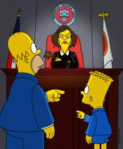

Jane Kaczmarek On The Simpsons!

Jane is the second star of Malcolm In The Middle to supply a voice on the Simpsons!
Here is a description of only one of the TWO episodes she appeared in as Judge Harm.
(The other episode was "Brawl in the Family")
"The Parent Rap" - CABF22
Air Date - 11th November 2001 (USA)
20th February 2002 (Australia)
When
Homer makes Bart and Milhouse walk to school, the boys get into trouble and are
arrested for stealing Chief Wiggum's squad car. Milhouse gets off but when Bart
comes to the bench, Judge Constance Harm (Jane Kaczmarek) takes over and lays
down the law. She holds Homer responsible for Bart's deeds and sentences he and
Bart to be tethered together.
Marge finally gets fed up with the punishment and cuts the rope. Only now, she and Homer get brought back before Judge Harm and have their heads and hands locked up in old-fashioned wooden stocks. Not being able to bare the punishment any longer, they break free and decide to get back at the judge. When the plan goes awry, they accidentally sink the Judge's houseboat and are once again brought into court. Just as Judge Harm is ready to bang her gavel, Judge Schneider comes back from his fishing trip and declares a verdict of "boys will be boys," dismissing the case.
* Episode description taken from www.thesimpsons.com *